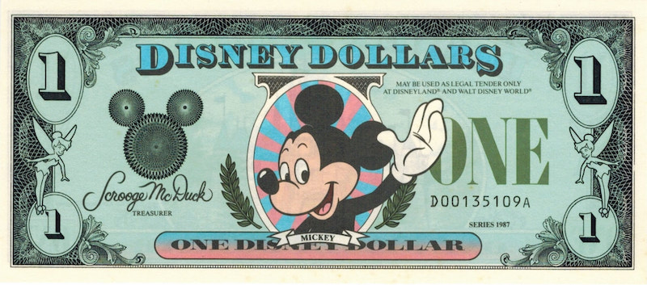

Como economizar muito na viagem a Orlando e
Disney
Como economizar muito na viagem a Orlando e
Disney

Saiba como economizar MUITO em Orlando e na sua viagem à Disney.
Separamos as melhores dicas que vão ajudar você a economizar muito por lá e fazer sua viagem sair muito mais
barata.
Você vai economizar bastante na hospedagem, nas passagens aéreas, nas refeições, no seguro viagem,
nos ingressos dos parques, nas compras, no aluguel do carro, no chip de celular e em muito mais coisas
que você nem imagina. Sem falar na mega parceria que conseguimos recentemente para nossos leitores e que vai
fazer você
economizar ainda mais. Veja abaixo 3 dicas para economizar muito em Orlando e na Disney.
-
Viaje nos meses de baixa temporada em Orlando
A primeira dica é a mais simples de todas, mas é a que vai fazer você economizar mais na sua viagem. Evite
viajar
na alta temporada. Nos meses de férias escolares no Brasil e no final do ano tudo fica muito mais caro em
Orlando.
Se você viajar na baixa temporada, vai pagar mais barato em quase tudo e não vai pegar filas e multidões nos
parques
e outlets. Se puder, evite os meses de julho, dezembro e janeiro. E também as semanas do Spring Break americano
(normalmente cai em Março, mas varia todo ano) e o feriado da páscoa em Abril. Em qualquer outra época que não
seja essas, você vai pagar mais barato em tudo e aproveitar muito mais as atrações.
-
Cupons de desconto
Uma dica legal é que a maioria dos shoppings e outlets possuem cupons de desconto que são muito bons.
A dica é entrar no site deles e imprimir os cupons de descontos que eles oferecem. Tem lojas que você consegue
até 50% de desconto, o que fará você economizar um bom dinheiro nas compras. E os descontos são realmente bons e
funcionam.
-
Como economizar nas compras em Orlando
Uma dica boa para economizar é nas compras em Orlando. Não saia comprando tudo o que ver logo de cara, pois
existem vários
lugares para você adquirir coisas baratas por lá. A primeira dica é ir, antes de tudo, em um dos dois Outlets
Premium de Orlando, que são enormes, possuem mais de 350 lojas e os melhores preços. Lá você vai comprar boa
parte do que precisa e pode deixar o que falta para comprar nos shoppings e lojas dos parques.
Conheça agora os principais personagens da Disney: